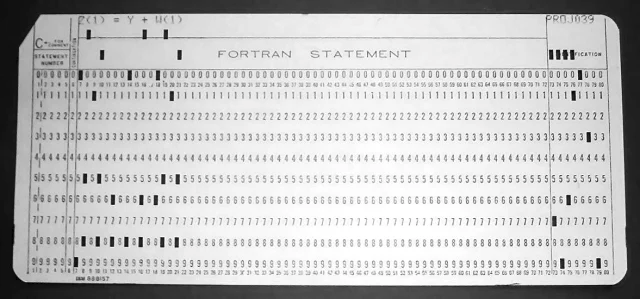

Ensino (Teaching)
Table of Contents
- 1. EAMB-7040 (Tópicos especiais) Programação Paralela em Chapel
- 2. EAMB-7024 Métodos Numéricos em Engenharia Ambiental
- 3. TEA-010 Matemática Aplicada I
- 4. TEA-013 Matemática Aplicada II
- 5. TEA-018 Hidrologia Ambiental (Em conjunto com EAMB-7039 (Tópicos Especiais) Hidrologia Física)
- 6. TEA-023/EAMB-7003 Dispersão Atmosférica e Qualidade do Ar/Camada-Limite Atmosférica e Modelos de Dispersão Atmosférica
- 7. EAMB-7050 Mecânica da Turbulência
- 8. MNUM7092 Chapel
- 9. EAMB-7040 (Tópicos especiais) Programação Paralela em Chapel
- 10. TEA-040B Implementação Computacional de Modelos de Evaporação e Evapotranspiração
- 11. EAMB-7039 (Tópicos Especiais) Ferramentas computacionais para redação técnica e científica: LaTeX e Gnuplot
- 12. EAMB-7021 Mecânica dos Fluidos Ambiental Intermediária
- 13. TEA-034 Tópicos Especiais em Engenharia Ambiental: Técnicas de Aprendizagem Acadêmica
- 14. EAMB7023-TEA-752 Métodos Matemáticos em Engenharia Ambiental
- 15. EAMB-7009 Dinâmica espectral da turbulência
This site is searchable. See HELP on the right (you may need to click around a few times until HELP shows up).
1. EAMB-7040 (Tópicos especiais) Programação Paralela em Chapel
A disciplina será ofertada na forma de oficinas de programação. A sintaxe da linguagem de programação Chapel (https://chapel-lang.org/) será apresentada. Algoritmos paralelizáveis serão apresentados e programados primeiramente de forma serial, e em seguida de forma paralela. Uso de recursos de paralelização disponíveis em computadores pessoais (paralelização dos núcleos da CPU; uso paralelo da GPU) serão implementados em Chapel.
Is it narrower now?
1.1. Ementa
Visão geral da linguagem. Constantes, variáveis, expressões. Estruturas de controle. Domínios e arrays. Entrada e Saída. Paralelização. Records; Procedures. Implementação Paralela de diversos algoritmos.
1.2. Programa
| Unid Didática | Conteúdo | Datas de execução |
|---|---|---|
| 1 | Údo | 1o^ semestre |
1.3. Avaliação
3 trabalhos de programação em Chapel, em grupo ou individuais
1.4. Bibliografia
Documentação da linguagem em (https://chapel-lang.org/)
1.5. Notas on-line (on-line notes and programs)
Os programas listados a seguir estão disponibilizados nos termos da licença pública geral Gnu (GNU GPL), https://www.gnu.org/licenses/gpl-3.0.en.html.
The following programs are made available under the Gnu General Public License, (GNU GPL), https://www.gnu.org/licenses/gpl-3.0.en.html.
1.5.1. Introduction
Chapel is a procedural programming language.
A brief overview of memory, computers, and programming languages.
Fortran 66:
C ==================================================================== C ==> forroots : a Fortran 66 program to calculate the roots of a C 2 nd - degree equation C ==================================================================== 00001 A = 1.0 00002 B = 2.0 00003 C = 0.5 00004 X1 = (-B-SQRT(B*B-4*A*C))/(2*A) 00005 X2 = (-B+SQRT(B*b+4*A*C))/(2*A) 00006 WRITE (6,*) X1 00007 WRITE (6,*) X2 00008 END
A punched card:

Pascal:
(* ================================================================ ==> pasroots: a Pascal program: roots of a 2nd-degree equation ================================================================ *) PROGRAM ROOTS; CONST A = 1.0; B = 2.0; C = 0.5; VAR X1, X2: REAL; BEGIN X1 := (-B - SQRT(B*B - 4*A*C))/(2*A); X2 := (-B + SQRT(B*b + 4*A*C))/(2*A); WRITELN(X1); WRITELN(X2); END.
C:
// =================================================================== // ==> croots: roots of the 2nd degree equation in C // =================================================================== #include <stdio.h> #include <math.h> int main(void) { #define A 1.0 #define B 2.0 #define C 0.5 float x1,x2; x1 = (-B - sqrt(B*B - 4*A*C))/(2*A); x2 = (-B + sqrt(B*B + 4*A*C))/(2*A); printf("x1 = %g\n",x1); printf("x2 = %g\n",x2); }
And finally, Chapel:
// =================================================================== // ==> chplroots: roots of the 2nd degree equation in Chapel // =================================================================== const a = 1.0, b = 2.0, c = 0.5; var x1 = (-b - sqrt(b*b - 4*a*c))/(2*a); var x2 = (-b + sqrt(b*b + 4*a*c))/(2*a); writef("x1 = %r\n",x1); writef("x2 = %r\n",x2);
1.5.2. Installation
(only general instructions; not step-by-step)
- Linux:
There are packages ready at Chapel's site. https://chapel-lang.org/download/. Download and install.
- MacOs:
Ditto, with Homebrew.
- Windows:
- Install VirtualBox
- Create a Linux virtual machine.
- Install in the virtual machine.
1.5.3. Overview
1.5.3.1. Hello World
// =================================================================== // ==> hello: say hello // =================================================================== writeln("hello, world"); // say hello
Where is Chapel? run ./source chplenv.sh
chpl_home=/home/nldias/chapel-2.3.0 CHPL_PYTHON=`$chpl_home/util/config/find-python.sh` # Remove any previously existing CHPL_HOME paths MYPATH=`$CHPL_PYTHON $chpl_home/util/config/fixpath.py "$PATH"` exitcode=$? MYMANPATH=`$CHPL_PYTHON $chpl_home/util/config/fixpath.py "$MANPATH"` # Double check $MYPATH before overwriting $PATH if [ -z "${MYPATH}" -o "${exitcode}" -ne 0 ]; then echo "Error: util/config/fixpath.py failed" echo " Make sure you have Python 2.5+" return 1 fi export CHPL_HOME=$chpl_home echo "Setting CHPL_HOME to $CHPL_HOME" CHPL_BIN_SUBDIR=`$CHPL_PYTHON "$CHPL_HOME"/util/chplenv/chpl_bin_subdir.py` export PATH="$CHPL_HOME"/bin/$CHPL_BIN_SUBDIR:"$CHPL_HOME"/util:"$MYPATH" echo "Updating PATH to include $CHPL_HOME/bin/$CHPL_BIN_SUBDIR" echo " and $CHPL_HOME/util" export MANPATH="$CHPL_HOME"/man:"$MYMANPATH" echo "Updating MANPATH to include $CHPL_HOME/man" export CHPL_LLVM=system CHPL_BIN_SUBDIR=`"$CHPL_HOME"/util/chplenv/chpl_bin_subdir.py` export PATH="$CHPL_HOME"/bin/$CHPL_BIN_SUBDIR:"$CHPL_HOME"/util:"$MYPATH" echo "Updating PATH to include $CHPL_HOME/bin/$CHPL_BIN_SUBDIR" echo " and $CHPL_HOME/util" echo $PATH # -------------------------------------------------------------------- # for the time being, I am putting all modules here # -------------------------------------------------------------------- export CHPL_MODULE_PATH=/home/nldias/Dropbox/nldchpl/modules # -------------------------------------------------------------------- # use all available cores! not working with 1.30, yet # -------------------------------------------------------------------- export CHPL_RT_NUM_THREADS_PER_LOCALE=MAX_LOGICAL
Now
source chplenv.sh chpl hello.chpl ./hello
You only need to say source chplenv.sh once for every terminal section.
Or
// =================================================================== // ==> hello2: say hello, then write a newline // =================================================================== write("hello, world\n2\n");
chpl hello2.chpl ./hello
1.5.3.2. Variables and arithmetic expressions
// =================================================================== // ==> fatoce: print Fahrenheit-Celsius table for fahr = 0, 20, ..., // 300 // =================================================================== const lower = 0, // lower limit of temperature table upper = 300, // upper limit step = 20; // step size (all implicit integers) var fahr, // fahr and celsius are explicitly declared celsius: int; // to be integers fahr = lower; while fahr <= upper do { // no need to encl logical expr in parenth celsius = 5*(fahr-32)/9; // integer arithmetic writef("%5i %5i\n", fahr, celsius); // use writef to format fahr = fahr + step; } writeln(9/10); // integer arithmetic truncates
Types in Chapel:
// =================================================================== // ==> chtypes: experiment with basic types // =================================================================== use Types; // to use numBits, min and max, but superfluous // because Types's objects are always visible var smk: int(8); // An 8-bit integer var umj: uint(32); // A 32-bit unsigned integer var afp: real(32); // A 32-bit floating point ("single precision") var dfp: real(64); // A 64-bit floating point var zim: imag; // A 64-bit purely imaginary flt pt number var zni: complex; // A complex (two floating points) writeln(min(umj.type)); // the minimum unsigned 32-bit integer writeln(max(umj.type)); // the maximum unsigned 32-bit integer writeln(numBits(zim.type)); // prints 64: the default is imag(64) writeln(numBits(zni.type)); // prints 128: the default is complex(128)
// =================================================================== // ==> realf2c: print Fahrenheit-Celsius table for fahr = 0, 20, ..., // 300, but use floating point operations // =================================================================== const lower = 0, // lower limit of temperature table upper = 300, // upper limit step = 20; // step size (all implicit integers) var ifahr: int; // ifahr is explicitly declared to be int var rfahr, // rfahr and rcelsius are explicitly declared rcelsius: real; // to be floating point variables ifahr = lower; // start at the lower temperature value while ifahr <= upper do { // loop controlled with integer arithmetic rfahr = ifahr; // implicitly convert to real rcelsius = 5.0*(rfahr-32.0)/9.0; // flt pt arithmetic writef("%3.0dr %6.1dr\n", rfahr, rcelsius); // use writef to format ifahr = ifahr + step; // int arithmetic }
The dangers of roundoff:
// =================================================================== // ==> infloop: an unintended infinite loop // =================================================================== var x = 0.0; writef("%30.24r\n",0.1); while true do { x += 0.1; // increment x by *approximately* 0.1 writef("%30.24r\n",x); if x == 1.0 then { break; } }
Literal separators
// =================================================================== // ==> litsep: literal separators in Chapel // ================================================================== config const j = 2_200; // a integer runtime const var x: int = 2_357_717; // an integer var t: int = 55_41_79818_3838; // a fictitious phone # var r: real = 1.237_428E3; // a floating point
Format strings
| C | Chapel | Meaning |
|---|---|---|
| %i | %i | an integer in decimal |
| %d | %i | an integer in decimal |
| %u | %u | an unsigned integer in decimal |
| %x | %xu | an unsigned integer in hexadecimal |
| %g | %r | real number in exponential or decimal (if compact) |
| %7.2g | %7.2r | real, 2 significant digits, padded to 7 columns |
| %f | %dr | real number always in decimal |
| %7.3f | %7.3dr | real, 3 digits after ., padded to 7 columns |
| %e | %er | real number always in exponential |
| %7.3e | %7.3er | real, 3 digits after ., padded to 7 columns |
| %s | %s | a string without any quoting |
1.5.3.3. Bye/character input and output
Bytes & Chars:
// =================================================================== // ==> acafrao: the difference between characters and bytes // =================================================================== const aca = "açafrão"; writeln("number of characters = ", aca.size); writeln("number of bytes = ", aca.numBytes);
File copy:
// =================================================================== // ==> filecp: file copy // =================================================================== use IO; var xc: uint(8); // carries a byte from stdin to stdout while stdin.readBits(xc,8) do { // read 8 bits stdout.writeBits(xc,8); // write 8 bits }
# of chars in a file:
// =================================================================== // ==> nc: count characters from stdin // =================================================================== use IO; var ichar: int; // the codepoint of each character in the file var nc: int = 0; // the number of characters in the file while stdin.readCodepoint(ichar) do { nc += 1; // increment number of characters } writeln("nc = ",nc);
# of lines in a file:
// =================================================================== // ==> nl: count lines from stdin // =================================================================== use IO; var nl: int = 0; var line: string; while stdin.readLine(line) do { nl += 1; } writeln("nl = ",nl);
# of lines, words and chars:
// =================================================================== // ==> nwc: count lines, words and chars // =================================================================== use IO; var nc = 0, // the number of chars nw = 0, // the number of words nl = 0; // the number of lines var line: string; // one line while stdin.readLine(line) do { nl += 1; // for each line read, increment nl nc += line.size; // how many chars in this line? var field = line.split(); // split line into fields nw += field.size; // # of words = # of fields in the line } // end of while writef("lines words chars: %i %i %i\n",nl,nw,nc);// print results
Count digits, whitespace and others in a file:
// =================================================================== // ==> intarray: count digits, whitespace, others // =================================================================== use IO; // needed for readString const k0 = "0".toCodepoint(); // ord("0") would be inftly easier var sc: string; // each character read var z: int; var ndigit: [0..9] int = 0; // # of chars for each digit var nwhite = 0, // # of whitespace chars nother = 0; // # of other kinds of chars while stdin.readString(sc,1) do { // read one character at a time if sc.isDigit() then { var k = sc.toCodepoint(); // k = ord(sc) ndigit[k-k0] += 1; // this is still a C trick! } else if sc.isSpace() then { nwhite += 1; // more whitespace } else { nother += 1; // more other } } write("digits = "); for k in 0..9 do { writef(" %i",ndigit[k]); } writef(", white space = %i, other = %i\n", nwhite, nother);
1.5.3.4. Arrays and forall
forall and operations on arrays:
// =================================================================== // ==> firsfra: a first encounter with forall // =================================================================== var A = [14, 34, 17, 19, 5, 22, 31, 44, 2, 10]; // init A var B = [37, 9, 4, 11, 7, 17, 28, 41, 1, 9]; // init B var C: [0..9] int; forall i in 0..9 do { C[i] = A[i] + B[i]; // all 10 sums are independent }
// =================================================================== // ==> whole: operation on whole arrays // =================================================================== use IO; var bb = true; var x,y,z: int; x = y + z ; var A = [14, 34, 17, 19, 5, 22, 31, 44, 2, 10]; // init A var B = [37, 9, 4, 11, 7, 17, 28, 41, 1, 9]; // init B var C = A + B; // sum all elements var g = A + B; var D = [i in 0..9] if A[i] > B[i] then A[i] else B[i]; // init D writea(A); // pretty-print them all writea(B); writea(C); writea(D); var E: [0..9] int; // declare E as array E = 1..10; // assign range to array g = 1..10; writeln(E.domain); // print E's domain writea(E); // pretty-print E // ------------------------------------------------------------------- // --> writea: pretty-print array a // ------------------------------------------------------------------- proc writea(a) { for x in a do { writef("%3i ",x); } writef("\n"); }
1.5.3.5. Procedures
// =================================================================== // ==> fu11x: calculate 1/(1+x) for x = 1, ..., 10 // =================================================================== for i in 1..10 do { var ax = i; writef("%5.2dr %10.4dr\n",ax,f11(ax)); // call f11 } // ------------------------------------------------------------------- // --> f11: calculate 1/(1+x) // ------------------------------------------------------------------- proc f11(x: real): real { // declare a function return 1.0/(1.0 + x); // return the function's value }
// =================================================================== // ==> fupow: raise integers to integer powers // =================================================================== for i in 1..10 do { writef("%2i %4i %+8i\n",i,power(2,i),power(-3,i)); } // ------------------------------------------------------------------- // --> power: raise base to n // ------------------------------------------------------------------- proc power(base: int, n: int): int { var p = 1; for i in 1..n do { p *= base; } return p; }
// =================================================================== // ==> whatout: how the "out" intent works // =================================================================== var y = 1; // set y to 1 writeln("y = ",y); // write it pout(y); // change y by calling pout writeln("y = ",y); // write it again // ------------------------------------------------------------------- // --> pout: returns x = 0 (always) // ------------------------------------------------------------------- proc pout(out x: int): void { return; }
// =================================================================== // ==> genadd: generic addition of two elements // =================================================================== writeln(gadd(1,2)); writeln(gadd(10.0,1.0)); writeln(gadd(2 + 1i, 3 + 2i)); writeln(gadd("more","beer")); // ------------------------------------------------------------------- // gadd: generic addition // ------------------------------------------------------------------- proc gadd(x, y) { return x + y; }
// =================================================================== // ==> callproc: calling alternatives for a procedure // =================================================================== writeln(mdays(4)); // days in april writeln(mdays(leap=false,month=5));// days in may writeln(mdays(2,leap=true)); // days in february, leap year // ------------------------------------------------------------------- // --> mdays: number of days in each month // ------------------------------------------------------------------- proc mdays(month: int, leap: bool = false): int { const Ndays: [1..12] int = [31, 28, 31, 30, 31, 30, 31, 31, 30, 31, 30, 31]; assert(1 <= month && month <= 12); if month == 2 && leap then { return 29; } else { return Ndays[month]; } }
1.5.3.6. Strings
// =================================================================== // ==> maxline: prints the longest line // =================================================================== use IO; var maxls = 0; // the maximum size var line, // the current line maxline: string; // the longest line while stdin.readLine(line) do { // loop over lines var ls = line.size; // the current size if ls > maxls then { // compare with maximum size so far maxls = ls; // save the maximum size maxline = line; // save the longest line } } writeln(maxline); // write the longest line
A module to process strings:
// =================================================================== // ==> nstrings: utility functions for strings // =================================================================== // ------------------------------------------------------------------- // --> ord: the codepoint of a 1-char string // ------------------------------------------------------------------- proc ord(c: string): int(32) { assert(c.size == 1); return c.toCodepoint(); } // ------------------------------------------------------------------- // --> chr: the 1-char string corresponding to a codepoint // ------------------------------------------------------------------- proc chr(i: int(32)): string { return codepointToString(i); } // ------------------------------------------------------------------- // --> strtoarc: convert string to array of 1-char strings // ------------------------------------------------------------------- proc strtoarc(s: string): [] string { const n = s.size; var a = [i in 0..#n] s[i]; // split s into chars -> a return a; } // ------------------------------------------------------------------- // --> arctostr: convert array of 1-char strings to string // ------------------------------------------------------------------- proc arctostr(a: [] string): string { assert(a.rank == 1); // a must be rank 1 for i in a.domain do { assert(a[i].size == 1); // is a an "array of char" } const s = "".join(a); // join all chars return s; } // ------------------------------------------------------------------- // --> reverse a string // ------------------------------------------------------------------- proc reverse(s: string): string { const n = s.size; var a = strtoarc(s); for i in 0..n/2 do { a[i] <=> a[n-1-i]; // reverse char positions } return(arctostr(a)); } // ------------------------------------------------------------------- // --> ifind: find where needle is inside string. returns -1 if // needle is not found // ------------------------------------------------------------------- proc string.ifind(needle: string): int { var n = this.size; var s = needle.size; var i = 0; do { if (this[i..#s] == needle) then return i; // slicing i += 1; } while i <= n-s ; return -1; }
A program that uses nstrings.chpl :
// =================================================================== // ==> rnst: test module nstrings // =================================================================== use nnstrings; writeln("ord('ç') = ",ord('ç')); // codepoint of ç writeln("chr(231) = ",chr(231)); // char at 231 writeln(reverse("ABCDEFGHIJ")); // reverse string const us = "açafrão"; var bb = us.find("ça"); // bb is of type byteIndex var be = us.find("ão"); // be is of type byteIndex var ib = us.ifind("ça"); // ib is of type int var ie = us.ifind("ão"); // ie is of type int writeln(bb," ",be); writeln(ib," ",ie); // writeln(us[bb+1..be-1]); // ill-formed utf-8 string writeln(us[ib+1..ie-1]); // well-formed utf-8 string
Multi-line strings:
config const describe = false; const doc = "\ =======================================================================\ ==> donothing: this program does nothing \ \ ./donothing: does nothing \ ./donothing --describe: prints this \ =======================================================================\ "; if describe then { writeln(doc); }
1.5.3.7. enums
// =================================================================== // ==> enumex: example of enumerated types // =================================================================== enum season { summer, fall, winter, spring }; // an abstract enum const allseasons = {season.first .. season.last}; // its domain const temp: [allseasons] real = // seasons' temperatures in oC [25.0, 18.0, 5.0, 21.0]; writeln('-'*10); // separate outputs for s in allseasons do { // print seasons and their temps writeln(s,' ',temp[s]); } writeln('-'*10); // separate outputs writeln(season.summer); // the enum constant name enum month {jan=1, feb, mar, // a concrete enum apr, may, jun, jul, aug, sep, oct, nov, dec}; const ndays: [month.first .. month.last] int = // # days in months [31, 28, 31, 30, 31, 30, 31, 31, 30, 31, 30, 31]; writeln('-'*10); // separate outputs for m in month do { // print month, month #, days in month writeln(m,' ',m:int,' ',ndays[m]); } enum emonth {jan=2, feb=1, mar, // an evil enum! mar:int == 2 apr, may , jun, jul, aug , sep, oct, nov , dec}; writeln('-'*10); // separate outputs for m in emonth.first .. emonth.last do { // the evil loop writeln(m,' ',m:int); } writeln('-'*10); // separate outputs writeln(emonth.mar,' ',emonth.mar:int); // check that mar == jan
// =================================================================== // useenum: unqualifying the enumerated type constants // =================================================================== enum season {summer, fall, winter, spring} ; use season; for se in summer..spring do { writeln(se); }
1.5.3.8. Remainder and modulus
Can be exemplified in
// =================================================================== // ==> remmod: remainder '%' and modulus 'mod' operators // =================================================================== writeln("12 % 5 ",12 % 5); // prints 2 writeln("12 % (-5) ",12 % (-5)); // prints 2 writeln("(-12) % 5 ",(-12) % 5); // prints -2 // ------------------------------------------------------------------- // but mod is different from % // ------------------------------------------------------------------- writeln("mod(12,5) ",mod(12,5)); // prints 2 writeln("mod(12,-5) ",mod(12,-5)); // prints -3 writeln("mod(-12,5) ",mod(-12,5)); // prints 3
Because
\begin{align*} 12 \div 5 & = 2; & 12 & = 5 \times 2 + \underline{2}; \\ 12 \div (-5) & = -2; & 12 & = (-5) \times (-2) + \underline{2};\\ (-12) \div 5 & = -2; & -12 & = 5 \times (-2) + \underline{(-2)}. \end{align*}
Here, the % operator works in the same manner as in the C
programming language. It is interesting to note that in Python this
operator acts differently. In Chapel, the "Python" behavior is
provided by the mod operator in module Math. It is defined by
where \(\lfloor{m/n}\rfloor\) is the "floor" function: the greatest integer less than \(m/n\).
1.5.4. Control structures
1.5.4.1. if
// =================================================================== // exif: if examples // =================================================================== use IO; // because we will use read() var decide: int; // the variable to be used for branching writeln("say a number between 1 and 10"); read(decide); // read an int from the terminal if decide < 1 || decide > 10 then { // a simple if halt("you disobeyed me!"); // halt with an error code } // endif if decide == 1 then { // if then else writeln("you chose 1"); } else { writeln("you did not choose 1"); } // endif if decide == 2 then { // if then else/if then/else writeln("you chose 2"); } else if decide == 3 then { writeln("you did not choose 2"); writeln("you chose 3"); } else { writeln("you did not choose 2, or 3"); if decide > 3 then { // if decide > 3 echo it writeln("you chose ",decide); } // endif } // endif
1.5.4.2. select
// =================================================================== // ==> selarray: count '=', digits, whitespace, others, using a select // statement // =================================================================== use IO; // needed for readString const k0 = '0'.toCodepoint(); // ord('0') would be inftly easier var sc: string; // each character read var ndigit: [0..9] int = 0; // # of chars for each digit var nequal = 0, // # of '=' chars nwhite = 0, // # of whitespace chars nother = 0; // # of other kinds of chars while stdin.readString(sc,1) do { select sc { when '=' do { nequal += 1; // more '=' } when '0','1','2','3','4','5','6','7','8','9' do { var k = sc.toCodepoint(); // k = ord(sc) ndigit[k-k0] += 1; // this is still a C trick! } when ' ','\n','t' do { nwhite += 1; // more whitespace } otherwise do { nother += 1; // more other } } } write("digits = "); for k in 0..9 do { writef(" %i",ndigit[k]); } writef(", equal = %i, white space = %i, other = %i\n", nequal, nwhite, nother);
1.5.4.3. continue
// =================================================================== // excont: a contrived example of the continue statement // =================================================================== var x: int = 10; while x > 0 do { x -= 1; if x % 2 != 0 then { continue; } writeln(x); }
1.5.4.4. break
// =================================================================== // ==> qdran: a library for random number generation // =================================================================== private var next: uint(32) = 1; // next exists between calls // ------------------------------------------------------------------- // --> ranqd: generates the next pseudorandom number from current // ------------------------------------------------------------------- proc ranqd(): uint(32) { next = next*1664525 + 1013904223; return next; } // ------------------------------------------------------------------- // --> seeqd: seeds the sequence, changing global variable next // ------------------------------------------------------------------- proc seeqd(seed: uint(32)) { next = seed; }
// =================================================================== // ==> exbreak: a contrived example of the break statement // =================================================================== use qdran, Time ; var vnow = dateTime.now(); // current time var vmid = new dateTime(vnow.year,vnow.month,vnow.day); var tdel = vnow - vmid; var seed = (101*tdel.seconds):uint(32); seeqd(seed); writeln("seed is ",seed); var y: int = ranqd(); // sample a positive integer writeln("factoring ",y); var x = y/2 ; while x > 1 do { if y % x == 0 then { writeln(y, " has factor ",x," after ",y/2-x+1," trials"); break; } x -= 1; } if x == 1 then { // how did I get here? writeln(y," is prime"); }
1.5.4.5. for
// =================================================================== // ==> forfahr: print Fahrenheit-Celsius table for fahr = 0, 20, ..., // 300, using a for // =================================================================== const lower = 0, // lower limit of temperature table upper = 300, // upper limit step = 20; // step size (all implicit integers) for fahr in lower..upper by step do { var celsius = 5*(fahr-32)/9; // integer arithmetic writef("%5i %5i\n", fahr, celsius); // use writef to format }
// =================================================================== // ==> forminus: print Fahrenheit-Celsius table for fahr = 300, 280, // ... , 0 using a for // =================================================================== const lower = 0, // lower limit of temperature table upper = 300, // upper limit step = 20; // step size (all implicit integers) for fahr in lower..upper by -step do { var celsius = 5*(fahr-32)/9; // integer arithmetic writef("%5i %5i\n", fahr, celsius); // use writef to format }
// =================================================================== // ==> fruits: iterate over fruits // =================================================================== const fruits = ["apple","orange","banana","strawberry","pineapple"]; for afruit in fruits do { writeln(afruit); }
// =================================================================== // ==> forcebreak: force a break from an inner loop // =================================================================== var m : [1..4][1..5] real = // m is an array of array [ [1.0, 4.0, 7.0, 8.0, 12.0], // initialize: 1st row [2.0, 3.0, 5.0, -1.0, 11.0], // 2nd row [0.0, 10.0, 12.0, 15.0, 17.0], // 3rd row [7.0, 6.0, 5.0, 4.0, 14.0] ]; // 4th row writeln("rank of m = ",m.rank); // m is 1-D writeln("rank of m[1] = ",m[1].rank); // m[1] is also 1-D var found = (0,0); label outer for i in 1..4 do { // outer loop for j in 1..5 do { // inner loop if m[i][j] < 0.0 then { found = (i,j); break outer; } } } if found != (0,0) then { // was a negative value found? writeln("found = ",found); }
// =================================================================== // ==> rollloop: a rolled loop // =================================================================== var a: [1..5] real; a = [1.0, 2.0, 3.0, 4.0, 5.0]; for i in 1..5 do { writeln(a[i]); }
// =================================================================== // ==> unrollloop: an unrolled loop // =================================================================== var a: [1..5] real; a = [1.0, 2.0, 3.0, 4.0, 5.0]; writeln(a[1]); writeln(a[2]); writeln(a[3]); writeln(a[4]); writeln(a[5]);
// =================================================================== // ==> paramloop: the compiler is instructed to unroll the loop // =================================================================== var a: [1..5] real; a = [1.0, 2.0, 3.0, 4.0, 5.0]; for param i in 1..5 do { writeln(a[i]); }
1.5.4.6. do while
// =================================================================== // ==> itoa: convert an int into a string // =================================================================== use IO, nnstrings; var n: int; writeln('give me an int '); read(n); // read an int from terminal var sign = n; // record the sign if sign < 0 then { // only convert positive ints n = -n; } const M = 20; // the largest string for an int // is "-9223372036854775808" var t: [0..M-1] string = chr(0); // make sure t is "array of char" var i = 0; do { // loop over all digits t[i] = chr((n % 10):int(32) + ord('0')); // next last digit i += 1; // next digit n /= 10; // divide n by 10 } while n > 0 ; // while digits left if sign < 0 then { // restore the sign t[i] = '-'; } writeln("size of t is ", t.size); // how big is t? var s = arctostr(t); // convert to string s s = s.strip(chr(0)); // remove null chars writeln("size of s is ", s.size); // how big is s? s = reverse(s); // reverse characters in s writeln(s); // print result
1.5.5. Ranges, domains and arrays
1.5.5.1. Ranges
// =================================================================== // ==> range01: simple ranges // =================================================================== var b1: range = false..true; // a boolean range writeln(b1); // print it for b in b1 do writeln(b); // print each element writeln('-'*40); var r1: range = 1..10; // an int range for i in r1 do writef("%2i, ",i); writef('\n'); writeln('-'*40); r1 += 4; // increment all values in r1 by 4 for i in r1 do writef("%2i, ",i); writef('\n'); writeln('-'*40); var r2: range = 0..#10; // this is the count operator # for i in r2 do writef("%2i, ",i); writef('\n');
// =================================================================== // ==> range02: strides // =================================================================== use strideKind; // odd numbers var odd: range(strides=positive) = 1..10 by 2; // 10 downto 1 var dwn: range(strides=negOne) = 1..10 by -1; for i in odd do writef('%2i, ',i); // no need for braces writef('\n'); writeln('-'*40); for j in dwn do writef('%2i, ',j); writef('\n');
1.5.5.2. Rectangular domains
// =================================================================== // ==> ard: a first look at domains and arrays // =================================================================== use IO,PrecisionSerializer; // to change the iostyle of stdout use Random; // to fillRandom var D = {1..10}; // a contiguous domain var A,B: [D] real; // two arrays attached to it var C: [1..10] real; // C has a const domain fillRandom(A,0); // random numbers in A, seeded with 0 fillRandom(B,1); // random numbers in B, seeded with 1 var sto = stdout.withSerializer( new precisionSerializer(precision=3, padding=5)); sto.writeln("C shape = ", C.shape," -- A shape = ",A.shape); // shapes C = A; // this is OK sto.writeln('A and B, before resizing: '); sto.writeln('A = ',A); sto.writeln('C = ',C); sto.writeln('B = ',B); sto.writeln(); sto.writeln('A and B, after resizing: '); D = {1..3}; // change domain; resize A and B sto.writeln('A = ',A); sto.writeln('B = ',B); sto.writeln("C shape = ", C.shape," -- A shape = ",A.shape); // shapes C = A; // this is not OK
1.5.5.3. Associative domains
// =================================================================== // ==> assocdom: associative domains are sets // =================================================================== var die: domain(int) = {1,2,3,4,5,6}; // the results of a die var even: domain(int) = {2,4,6,8,10}; // even numbers var odd: domain(int) = {1,3,5,7,9}; // odd numbers var t347 = {3,4,7}; // 3, 4 and 7 // ------------------------------------------------------------------- // set operations // ------------------------------------------------------------------- var oddeven = odd + even; // union writeln("union of odd and even is"); writeln(oddeven); var evenodd = odd | even; // union writeln("union of even and odd is"); writeln(evenodd); writeln( oddeven == evenodd); // is union commutative? var dieodd = die & odd; // intersection writeln("dieodd = "); writeln(dieodd); var symdie = die ^ t347; // symmetric difference writeln("sym die = "); writeln(symdie); var diffdie = die - t347; // difference writeln("diff die = "); writeln(diffdie); var oneseven = die; // start with die oneseven += 7; // add single element oneseven -= 1; // remove a single element writeln("oneseven = "); writeln(oneseven); oneseven -= {6,7}; // subtract a subset writeln(oneseven); writeln("Is 2 in die?"); writeln(die.contains(2)); // is 2 in die? writeln("Even numbers, sorted"); writeln(even.sorted()); // print domain sorted
Domain operators
| Operator | Meaning |
|---|---|
| & | intersection |
| | | union |
| + | union |
| ^ | symmetric difference |
| - | difference |
1.5.6. Input and Output
// =================================================================== // ==> filechannel: separate use of file and channel // // note that enum ioMode { r = 1, cw = 2, rw = 3, cwr = 4, a = 5 } // =================================================================== use IO only ioMode, open; var fou = open("filewriter.out", ioMode.cw); // the file var wou = fou.writer(); // the file writer wou.writeln("test of file and writer concepts"); // write w/ writer wou.close(); // close writer fou.close(); // close file
// =================================================================== // ==> lower: read from stdin and print to stdout with all characters // converted to lowercase // =================================================================== use IO, nnstrings; var xc, yc: int; while stdin.readCodepoint(xc) do { // read from stdin var sxc = chr(xc:int(32)); // convert xc to a 1-char string sxc = sxc.toLower(); // convert to lowercase write(sxc); // write single-character string }
Now do
chpl lower.chpl ./lower < upper.txt
// =================================================================== // ==> wmixbin: writes a binary file containing different types of // variables // =================================================================== use IO; use nnstrings; var fou = openWriter("mixbin.dat",serializer=new binarySerializer()); var i8: int(8) = -99:int(8); var xx: real(64) = 17981.347; var st = "Somewhere"; fou.write(i8); fou.write(xx); fou.write(st); fou.close();
// =================================================================== // ==> rmixbin: reads a binary file containing different types of // variables // =================================================================== use IO; var fin = openReader("mixbin.dat", deserializer=new binaryDeserializer()); var i8: int(8); var xx: real(64); var st: string; fin.read(i8); fin.read(xx); fin.readBinary(st,9); writef("%+04i\n",i8); writef("%+12.4dr\n",xx); writef("%s\n",st); fin.close();
1.5.7. First look at parallelism
The following program does not compile because there is a race condition
// =================================================================== // ==> exfra1: forall does not always work // =================================================================== use Random; config const n = 120_000; var A: [1..n] real; fillRandom(A); var sum = 0.0; for i in 1..n do { sum += A[i]; } writeln("sum from for = ", sum); sum = 0.0; forall i in 1..n do { sum += A[i]; // sum acts as a constant inside the forall @\label{lin:exfra1-ctsum}@ } writeln("sum from forall = ", sum);
Let's force it:
// =================================================================== // ==> exfra2: forall does not always work either // =================================================================== use Random; config const n = 120_000; var A: [1..n] real; fillRandom(A,0); var sum = 0.0; for i in 1..n do { sum += A[i]; } writeln("sum from for = ", sum); sum = 0.0; forall i in 1..n with (ref sum) do { sum += A[i]; } writeln("sum from forall = ", sum);
// =================================================================== // ==> exfra2: forall does not always work either // =================================================================== use Random; config const n = 120_000; var A: [1..n] real; fillRandom(A,0); var sum = 0.0; for i in 1..n do { sum += A[i]; } writeln("sum from for = ", sum); sum = 0.0; forall i in 1..n with (ref sum) do { sum += A[i]; } writeln("sum from forall = ", sum);
// =================================================================== // ==> exfra3: forall does not always work either // =================================================================== use Random; config const n = 1_600_000; var A: [1..n] real; fillRandom(A,0); use Time; // measure runtime var runtime: stopwatch; // with variable by the same name var sum = 0.0; runtime.start(); for i in 1..n do { sum += A[i]; } runtime.stop(); writef("sum from for = %12.4dr took %12.8dr s\n", sum, runtime.elapsed()); sum = 0.0; writeln("We have ", // run at Locales[0] Locales[0].numPUs(logical=true)," cores");// with numPUs cores runtime.clear(); runtime.start(); forall i in 1..n with (ref sum) do { sum += A[i]; } runtime.stop(); writef("sum from forall = %12.4dr took %12.8dr s\n", sum, runtime.elapsed());
// =================================================================== // ==> mansum-s: manual distribution of the sum among available // processing units // =================================================================== use Random; config const n = 1_600_000; var A: [1..n] real; fillRandom(A,0); var npu = Locales[0].numPUs(logical=true); // # of processing units assert( n % npu == 0); // make sure we can distribute the array var m = n/npu; // # of elements to be summed by each proc unit var psum: [0..npu-1] real = 0.0; use Time; var runtime: stopwatch; runtime.start(); for pu in 0..npu-1 do { var beg = pu*m + 1; var end = (pu+1)*m; for i in beg..end do { psum[pu] += A[i]; } } var sum = 0.0; for pu in 0..npu-1 do { sum += psum[pu]; } runtime.stop(); writef("sum = %12.4dr took %12.8dr s\n", sum,runtime.elapsed());
// =================================================================== // ==> mansum-p: manual distribution of the sum among available // processing units // =================================================================== use Random; config const n = 1_600_000; var A: [1..n] real; fillRandom(A,0); var npu = Locales[0].numPUs(logical=true); var m = n/npu; var psum: [0..npu-1] real = 0.0; use Time; var runtime: stopwatch; runtime.start(); coforall pu in 0..npu-1 do { var beg = pu*m + 1; var end = (pu+1)*m; for i in beg..end do { psum[pu] += A[i]; } } var sum = 0.0; for pu in 0..npu-1 do { sum += psum[pu]; } runtime.stop(); writef("sum = %12.4dr took %12.8dr s\n", sum,runtime.elapsed());
// =================================================================== // ==> redsum-p: automatic distribution of the sum among available // processing units with reduce // =================================================================== use Random; config const n = 1_600_000; var A: [1..n] real; fillRandom(A,0); use Time; var runtime: stopwatch; runtime.start(); var sum = 0.0; for i in 1..n do { sum += A[i]; } runtime.stop(); writef("(serial) sum = %12.4dr took %12.8dr s\n", sum, runtime.elapsed()); runtime.clear(); runtime.start(); sum = + reduce A; runtime.stop(); writef("(reduce) sum = %12.4dr took %12.8dr s\n", sum, runtime.elapsed());
Matrix multiplication
// =================================================================== // ==> mmv-s: test of sequential matrix-vector multiplication // =================================================================== config const nrep = 1000; config const n = 1000; var A: [0..#n,0..#n] real; var x,y: [0..#n] real; use Random; use Time; var runtime: stopwatch; for r in 1..nrep do { serial { fillRandom(A,r); fillRandom(x,nrep+r); } runtime.start(); mmv(A,x,y); runtime.stop(); } writeln(runtime.elapsed()); // ------------------------------------------------------------------- // --> mmv: a serial implementation of matrix-vector multiplication // ------------------------------------------------------------------- proc mmv(ref aA: [] real, ref ax: [] real, ref ay: [] real) { const n = aA.shape[0]; assert (aA.shape == (n,n)); assert (ax.shape == (n,)); assert (ay.shape == (n,)); ref A = aA.reindex({1..n,1..n}); ref x = ax.reindex({1..n}); ref y = ay.reindex({1..n}); serial { for i in 1..n do { var sum = 0.0; for j in 1..n do { sum += A[i,j]*x[j]; } y[i] = sum; } } }
// =================================================================== // ==> mmv-p: test of parallel matrix-vector multiplication // =================================================================== config const nrep = 1000; config const n = 1000; var A: [0..#n,0..#n] real; var x,y: [0..#n] real; use Random; use Time; var runtime: stopwatch; for r in 1..nrep do { fillRandom(A,r); fillRandom(x,nrep+r); runtime.start(); mmv(A,x,y); runtime.stop(); } writeln(runtime.elapsed()); // ------------------------------------------------------------------- // --> mmv: a parallel implementation of matrix-vector multiplication // ------------------------------------------------------------------- proc mmv(aA: [] real, ax: [] real, ay: [] real) { const n = aA.shape[0]; assert (aA.shape == (n,n)); assert (ax.shape == (n,)); assert (ay.shape == (n,)); ref A = aA.reindex({1..n,1..n}); ref x = ax.reindex({1..n}); ref y = ay.reindex({1..n}); forall i in 1..n do { var sum = 0.0; for j in 1..n do { sum += A[i,j]*x[j]; } y[i] = sum; } }
// =================================================================== // ==> mmv-r: test of parallel matrix-vector multiplication using // reduce // =================================================================== config const nrep = 1000; config const n = 1000; var A: [0..#n,0..#n] real; var x,y: [0..#n] real; use Random; use Time; var runtime: stopwatch; for r in 1..nrep do { fillRandom(A,r); fillRandom(x,nrep+r); runtime.start(); mmv(A,x,y); runtime.stop(); } writeln(runtime.elapsed()); // ------------------------------------------------------------------- // --> mmv: a parallel implementation of matrix-vector multiplication // ------------------------------------------------------------------- proc mmv(aA: [] real, ax: [] real, ay: [] real) { const n = aA.shape[0]; assert (aA.shape == (n,n)); assert (ax.shape == (n,)); assert (ay.shape == (n,)); ref A = aA.reindex({1..n,1..n}); ref x = ax.reindex({1..n}); ref y = ay.reindex({1..n}); y = [i in 1..n] + reduce (A[i,..]*x); }
2. EAMB-7024 Métodos Numéricos em Engenharia Ambiental
2.1. Ementa
Introdução; Problemas de equilíbrio; Problemas transientes: equações parabólicas e hiperbólicas , condições auxiliares; Classificação e características das equações diferenciais parciais; Equações de diferenças finitas: aproximação por diferenças finitas , discretização espacial e temporal, discretizações multidimensionais, consistência, convergência e estabilidade, formulações de ordem elevada; Técnicas de solução numérica: sistemas lineares, equações elípticas, métodos diretos, métodos iterativos, método de Gauss-Seidel, método de sobre-relaxação, condições de contorno tipo Neummann, equações hiperbólicas, equações de convecção e da onda linear, método de Runge-Kutta; Equações parabólicas; Aplicações em problemas ambientais: modelagem de aquíferos, dispersão em rios, modelos ecológicos. Método de Lattice Boltzmann.
2.2. Programa
| Aula | Data | Conteúdo Previsto | Conteúdo Realizado |
|
1 |
<2024-09-02 seg> |
Introdução à disciplina, linguagens de programação aceitas neste curso. |
Introdução à disciplina, linguagens de programação aceitas neste curso.Editores, linha de comando, Chapel I (string, int, real, etc.) Chapel II (arrays, arquivos de texto). |
|
2 |
<2024-09-04 qua> |
Editores, linha de comando, Chapel I (=string=, =int=, =real= , etc.) |
Chapel III, arquivos binários, =Random=. Aproximações de diferenças finitas; Euler ordem 1 (=fracasso.chpl= e =sucesso.chpl=). |
|
3 |
<2024-09-09 seg> |
Chapel II (/arrays/, arquivos de texto). |
Diferenças centradas implícito, Euler ordem 2. Runge-Kutta escalar. |
|
4 |
<2024-09-11 qua> |
Chapel III, arquivos binários, =Random= |
Runge-Kutta vetorial =learnarray.chpl=; =ada.chpl=; =unitTime.chpl=. |
|
5 |
<2024-09-16 seg> |
Aproximações de diferenças finitas; Euler ordem 1 (=fracasso.chpl= e =sucesso.chpl=). |
Runge-Kutta vetorial novamente. Onda cinemática. |
|
6 |
<2024-09-18 qua> |
Diferenças centradas implícito; Euler ordem 2. |
Problemas de valor de contorno em 1D: algoritmo de Thomas e ordem de convergência. O efeito da condição de contorno na ordem de convergência. |
|
7 |
<2024-09-23 seg> |
Runge-Kutta ordem 4. |
Solução numérica de EDPs: onda cinemática – esquema explícito instável. onda1d-ins.chpl e surf1d-ins.chpl. Análise de estabilidade de von Newmann. |
|
8 |
<2024-09-25 qua> |
Arrays e Domínios em Chapel; o módulo fada, e os tipos vec e mat. |
Esquema de Lax. Difusão numérica. Upwind. Quick. Início do Quickest |
|
9 |
<2024-09-30 seg> |
Runge-Kutta ordem 4 vetorial. |
Continuação e conclusão do Quickest. Exemplo 3.1: estabilidade de um esquema com dois parâmetros, $Cou$ e $Fou$ |
|
10 |
<2024-10-02 qua> |
Solução de uma onda cinemática com Runge-Kutta ordem 4 vetorial. |
Difusão numérica. Esquema explícito. Esquema implícito. |
|
11 |
<2024-10-07 seg> |
Problemas de valor de contorno em 1D: algoritmo de Thomas e ordem de convergência. |
Crank-Nicholson. Solução numérica da equação da difusão-advecção. |
|
12 |
<2024-10-09 qua> |
O efeito da condição de contorno na ordem de convergência. |
Solução analítica de um problema de difusão em 2D. Teoria do esquema ADI. |
|
13 |
<2024-10-14 seg> |
Entrega do T1. Defesa do T1 (15 minutos de apresentação, 5 de arguição). |
Programação de ADI |
|
14 |
<2024-10-16 qua> |
Solução numérica de EDPs: onda cinemática – esquema explícito instável. onda1d-ins.chpl e surf1d-ins.chpl. Análise de estabilidade de von Newmann. |
Comparação da soulção numérica com ADI com a solução analítica. Paralelização de ADI. Exemplos de trabalhos computacionais. |
|
15 |
<2024-10-21 seg> |
Esquema de Lax. Difusão numérica. Upwind. |
Entrega do T1. Defesa do T1 (15 minutos de apresentação, 5 de arguição). |
|
16 |
<2024-10-23 qua> |
Quick e Quickest. Paralelização com forall. |
Início da apresentação de SOR para Laplace. Uma defesa do T1 |
|
17 |
<2024-10-28 seg> |
Exemplo 3.1 e uma análise de estabilidade mais sofisticada. |
*Dia do funcionário público* |
|
18 |
<2024-10-30 qua> |
Difusão pura: método explícito e método implícito. |
SOR Laplace continuação |
|
19 |
<2024-11-04 seg> |
Difusão pura: Crank-Nicholson. Um problema completo de difusão-advecção. |
SOR Laplace: várias alternativas (omega = 1, toda a a grade, grade preta e branca) |
|
20 |
<2024-11-06 qua> |
Difusão 2D: solução analítica e método ADI. |
Volumes finitos, balanço de massa. |
|
21 |
<2024-11-11 seg> |
ADI: paralelização. |
Volumes finitios, balanço de massa de escalar. |
|
22 |
<2024-11-13 qua> |
/Over-relaxation/; paralelização. |
Volumes finitios, balanço de quantidade de movimento em x. |
|
23 |
<2024-11-18 seg> |
Navier-Stokes I. |
Implementação de upwind para volumes finitios, balanço de quantidade de movimento em x. |
|
24 |
<2024-11-20 qua> |
*Feriado* : Dia Nacional de Zumbi e da Consciência Negra (quarta-feira). |
|
|
25 |
<2024-11-25 seg> |
Navier-Stokes II |
|
|
26 |
<2024-11-27 qua> |
Navier-Stokes III |
|
|
27 |
<2024-12-02 seg> |
Entrega do T2. Defesa do T2 (15 minutos de apresentação, 5 de arguição). |
|
|
28 |
<2024-12-04 qua> |
Navier-Stokes IV |
|
|
29 |
<2024-12-09 seg> |
Navier-Stokes V |
|
|
30 |
<2024-12-11 qua> |
Navier-Stokes VI |
|
2.3. Notas de aula: chplnum.pdf
2.4. Avaliação
2 trabalhos individuais com temas à escolha dos alunos. Os trabalhos deverão ser defendidos (15 minutos) nas datas designadas na programação acima. Além disso, os trabalhos deverão ser entregues por email (mailto:nldias@ufpr.br) no seguinte formato:
- Um arquivo pdf (A4, Times-Roman, margens de 2.5cm) com a descrição teórica do trabalho (problema científico ou de engenharia, método numérico, etc.), resultados com figuras e tabelas, etc.; e a descrição do programa de computador (linguagem utilizada, principais tarefas que o programa realiza, questões computacionais relevantes).
- Um arquivo-fonte com o programa em uma das linguagens que podem ser utilizadas (ver tabela abaixo).
2.4.1. Linguagens que podem ser utilizadas nesta disciplina
A disciplina será lecionada com exemplos em Chapel, que é uma linguagem intrinsicamente paralela, com recursos de programação semelhantes a Python, e eficiência igual a Fortran. No entanto, os alunos poderão escolher várias linguagens para fazer seus trabalhos (veja a seguir).
Por exemplo, eis aqui um programa que resolve uma equação diferencial com o método de Runge-Kutta:
// ----------------------------------------------------------------------------- // rungek4: resolve a equação diferencial // dy/dx + y/x = sen(x) // usando o método de Runge-Kutta de ordem 4 // ----------------------------------------------------------------------------- use Math only sin, cos; use IO only openWriter; config const h = 0.1; // passo em x const n = round(50/h):int; // número de passos var x, // variável independente y: // variável dependente [0..n] real; x[0] = 0.0; // x inicial y[0] = 0.0; // y inicial // ----------------------------------------------------------------------------- // função que define a EDO dy/dx = sen(x) - y/x // ----------------------------------------------------------------------------- proc ff( const in x: real, const in y: real ): real { if x == 0.0 then { return 0.0 ; } else { return sin(x) - y/x ; } } // ----------------------------------------------------------------------------- // rk4 implementa um passo do método de Runge-Kutta de ordem 4 // ----------------------------------------------------------------------------- proc rk4( const in x: real, const in y: real, const in h: real, const ref af: proc( const in ax: real, const in ay: real ): real ): real { var k1 = h*af(x,y); var k2 = h*af(x+h/2,y+k1/2); var k3 = h*af(x+h/2,y+k2/2); var k4 = h*af(x+h,y+k3); var yn = y + k1/6.0 + k2/3.0 + k3/3.0 + k4/6.0; return yn; } for i in 0..n-1 do { // loop da solução numérica var xn1 = (i+1)*h; var yn1 = rk4(x[i],y[i],h,ff); x[i+1] = xn1; y[i+1] = yn1; } var erro = 0.0; // calcula o erro relativo médio for i in 1..n do { var yana = sin(x[i])/x[i] - cos(x[i]); erro += abs( (y[i] - yana)/yana ); } erro /= n ; writef("erro relativo médio = %10.5dr",erro); writeln(); const fou = openWriter("rungek4.out",locking=false); for i in 0..n do { // imprime o arquivo de saída fou.writef("%12.6dr %12.6dr\n",x[i],y[i]); } fou.close();
As linguagens em que os alunos poderão fazer seus trabalhos são
| Linguagem | Sistemas Operaconais | Onde encontrar |
|---|---|---|
| Chapel | Linux, MacOs, Windows(?) | https://chapel-lang.org/ |
| Fortran | Linux, MacOs, Windows | https://gcc.gnu.org/wiki/GFortran |
| C | Linux, MacOs, Windows | (Variável: parta de https://gcc.gnu.org/) |
| Pascal | Linux, MacOs, Windows | https://www.freepascal.org/ |
| MatLab (substitua por Octave) | Linux, MacOs, Windows | https://octave.org/ |
| Python | Linux, MacOS, Windows | (Variável: parta de https://python.org/) |
| Basic | Linux, MacOs, Windows | https://freebasic.net/ |
3. TEA-010 Matemática Aplicada I
3.1. Ementa
1- Ferramentas computacionais para programação e processamento simbólico. 2- Revisão de programação científica. 3- Vetores, matrizes e coordenadas. 4- Campos escalares e vetoriais. 5- Equações diferenciais de 1a e 2a ordens. 6- Teoria de variáveis complexas: analiticidade, séries,teorema do resíduo e integração de contorno. 7- Soluções em série de equações diferenciais. 8- Transformada de Laplace.
3.2. Sala e Horário
Sala: PM-01
Horário: 07:30–09:10
3.3. Programa: tea010-prog-2024-1.pdf
3.4. Livro-texto
2a edição (versão mais recente com adições e correções; ainda sem ISBN) : matappa-2ed.pdf
3.5. Notas
Veja aqui as notas até a F: notpre2024-1.pdf
3.6. Gabaritos
Faça o download do gabarito da P1: 2024-1-p01-sol.pdf
Faça o download do gabarito da P2: 2024-1-p02-sol.pdf
Faça o download do gabarito da P3: 2024-1-p03-sol.pdf
Faça o download do gabarito da S: 2024-1-s-sol.pdf
Faça o download do gabarito da F: 2024-1-f-sol.pdf
3.7. Arquivos de provas passadas
4. TEA-013 Matemática Aplicada II
4.1. Horário
- Aulas: 2as, 4as, 6as, 07:30–09:10
- Local: PM-2
- Atendimento: Por agendamento em minha sala
4.2. Ementa
1- Ferramentas computacionais e solução numérica com diferenças finitas de equações diferenciais parciais: análise de estabilidade de von Neumman e exemplos escolhidos entre a equação da difusão, equação da onda, equação de Laplace, e outras de uso comum em Engenharia Ambiental. 2- Análise linear, sistemas lineares em Engenharia. 3- Séries e Transformadas de Fourier. Solução de equações diferenciais, análise espectral e análise de periodicidade em séries de dados naturais. 4- Funções de Green e Identidades de Green em Engenharia: Hidrógrafa Unitária Instanânea, Problemas de Dispersão de Poluentes. 5- Teoria de Sturm-Liouville e algumas funções especiais adicionais (Legendre, Laguerre, Hermite). Importância da teoria no método de separação de variáveis para equações diferenciais parciais. 6- Equações Diferenciais Parciais: problemas lineares e não-lineares em escoamentos na atmosfera, nos oceanos, em rios e no solo, e problemas de dispersão de poluentes. 7- Classificação e o método das características: escoamento em canais. Solução por separação de variáveis, transformadas integrais e transformada de Boltzmann.
4.3. Unidades Didáticas
- Solução numérica de equações diferenciais parciais
- Transformada de Laplace
- Análise linear, sistemas lineares em Engenharia
- Séries e Transformadas de Fourier
- Teoria de Distribuições. Funções de Green e Identidades de Green em Engenharia: Hidrógrafa Unitária Instanânea, Problemas de Dispersão de Poluentes.
- Teoria de Sturm-Liouville e algumas funções especiais adicionais (Legendre, Laguerre, Hermite). Importância da teoria no método de separação de variáveis para equações diferenciais parciais.
- Equações Diferenciais Parciais: problemas lineares e não-lineares em escoamentos na atmosfera, nos oceanos, em rios e no solo, e problemas de dispersão de poluentes. Classificação e o método das características. Solução por separação de variáveis, transformadas integrais e transformada de Boltzmann.
4.4. Objetivos Didáticos
4.4.1. geral
A Disciplina TEA013 tem por objetivo aprofundar o domínio pelo aluno de modelos matemáticos analíticos e numéricos aplicáveis à Engenharia Ambiental.
4.4.2. específicos
A disciplina incluirá aplicações de: álgebra linear, espaços vetoriais normados, séries de Fourier e transformadas de Fourier, assim como diversas técnicas numéricas e analíticas de solução de equações diferenciais parciais. Essas técnicas são ilustradas com problemas em Mecânica dos Fluidos, Hidrologia, Meteorologia, Química Ambiental e Ecologia, enfatizando-se a capacidade de formular e de resolver alguns problemas típicos (dispersão,reações químicas, dinâmica de populações, etc.) de importância em Engenharia Ambiental.
4.5. Procedimentos didáticos
Aulas expositivas. Exemplos de métodos numéricos (programas, processamento, etc.) com projetor.
4.6. Avaliação
A disciplina é semestral. A avaliação da disciplina consiste de 3 exames parciais (\(P1\), \(P2\), \(P3\)), um exame subsitutivo \(S\) e um exame final \(F\). Os alunos poderão solicitar revisão de prova durante 3 dias úteis após a promulgação da nota. Após esse prazo, não será concedida nenhuma revisão. As soluções são disponibilizadas eletronicamente em \url{https://www.nldias.github.io}, juntamente com as notas.
A média parcial, \(P\), será \(P = (P1+P2+P3)/3\). O resultado parcial é: Alunos com \(P < 40\) estão reprovados. Alunos com \(P \ge 70\) estão aprovados. Para os alunos aprovados nesta fase, a sua média final é \(M = P\). Alunos com \(40 \le P < 70\) farão o exame final \(F\) . Calcula-se a média final \(M = (P + F)/2\). Alunos que obtiverem \(M \ge 50\) estão aprovados. Alunos com \(M < 50\) estão reprovados. Todas as contas são feitas com 2 algarismos significativos com arredondamento para cima.
4.7. Programa
| Aula | Data | Conteúdo Previsto | Conteúdo Realizado |
|
1 |
<2024-09-02 seg> |
Introdução ao Curso. Revisão de Ferramentas Computacionais |
Introdução ao Curso. Revisão de Ferramentas Computacionais |
|
2 |
<2024-09-04 qua> |
Diferenças finitas: método explícito para a equação de advecção. Fracasso do método. Explicação: instabilidade numérica. Análise de estabilidade de von Neumann. |
Diferenças finitas: método explícito para a equação de advecção. Fracasso do método. Explicação: instabilidade numérica. Análise de estabilidade de von Neumann. Esquemas numéricos para advecção: Upwind. Esquema explícito. Condição de estabilidade. |
|
3 |
<2024-09-06 sex> |
Esquemas numéricos para advecção: Upwind. Esquema explícito. Condição de estabilidade. Difusão pura. |
Esquema implícito: programação matricial e slicing com Numpy. Difusão pura. Introduçã a Crank-Nicholson ($O(\Delta t^2)$) |
|
4 |
<2024-09-09 seg> |
Esquema implícito: programação matricial e slicing com Numpy. Difusão pura. |
Crank-Nicholson. Análise de estabilidade. |
|
5 |
<2024-09-11 qua> |
Crank-Nicholson. A equação de difusão-advecção. Introdução ao método ADI. |
Condições de contorno. |
|
6 |
<2024-09-13 sex> |
ADI. Condições de contorno. |
Análise de estabilidade para a equação de difusão-advecção. Exemplos de aplicações |
|
7 |
<2024-09-16 seg> |
Transformada de Laplace: Definição e Cálculo. |
Análise de estabilidade para a equação de difusão-advecção. Transformada de Laplace: Definição e Cálculo. Transformada da derivada. Transformada de uma equação diferencial. |
|
8 |
<2024-09-18 qua> |
Transformada de Laplace: Convolução. Truques adicionais. |
Transformada de Laplace: Convolução. Truques adicionais. Solução de uma EDO com Transformada de Laplace |
|
9 |
<2024-09-20 sex> |
Inversão de Transformadas de Laplace. |
Inversão de Transformadas de Laplace. |
|
10 |
<2024-09-23 seg> |
A delta de Dirac. |
A delta de Dirac. |
|
11 |
<2024-09-25 qua> |
O Cálculo com Distribuições. |
O Cálculo com Distribuições. |
|
12 |
<2024-09-27 sex> |
*P1* |
*P1* |
|
13 |
<2024-09-30 seg> |
Distribuições: resultados adicionais e aplicações. |
Distribuições: resultados adicionais. Espaços normados: o produto interno. |
|
14 |
<2024-10-02 qua> |
Espaços Normados. O Produto interno. |
Desigualdade de Schwarz e aplicações. |
|
15 |
<2024-10-04 sex> |
Desigualdade de Schwarz e aplicações. |
Espaços vetoriais de dimensão infinita. Produto interno, funções quadrado-integráveis. |
|
16 |
<2024-10-07 seg> |
Espaços vetoriais de dimensão infinita. Séries de Fourier: Conceitos gerais e cálculo dos termos complexos. |
Espaços vetoriais de dimensão infinita. Séries de Fourier: Conceitos gerais e cálculo dos termos complexos. |
|
17 |
<2024-10-09 qua> |
Série de Fourier trignométrica. Extensões par e ímpar. |
Série de Fourier trignométrica. |
|
18 |
<2024-10-11 sex> |
Desigualdade de Bessel; Igualdade de Parseval. |
Extensões par e ímpar. |
|
19 |
<2024-10-14 seg> |
Mínimos quadrados e estatística. |
Desigualdade de Bessel; Igualdade de Parseval. |
|
20 |
<2024-10-16 qua> |
Transformada de Fourier e Teorema da Inversão. |
Transformada de Fourier e Teorema da Inversão. |
|
21 |
<2024-10-18 sex> |
Cálculo de transformadas. |
Cálculo de transformadas. |
|
22 |
<2024-10-21 seg> |
Linearidade, derivadas, Teorema da Convolução. |
Linearidade, derivadas. |
|
23 |
<2024-10-23 qua> |
*Semana de Engenharia Ambiental* |
*Semana de Engenharia Ambiental* |
|
24 |
<2024-10-25 sex> |
Teorema de Parseval. Aplicações adicionais. |
Teorema da Convolução. Teorema de Parseval. Aplicações adicionais. |
|
25 |
<2024-10-28 seg> |
Operador auto-adjunto. Matriz Adjunta. Operadores diferenciais adjuntos. |
*Dia do funcionário público* |
|
26 |
<2024-10-30 qua> |
Funções de Green I. |
Teorema de Parseval. Aplicações adicionais. |
|
27 |
<2024-11-01 sex> |
*P2* |
*P2* |
|
28 |
<2024-11-04 seg> |
Funções de Green II. |
Operador diferencial adjunto. Funções de Green (teoria) |
|
29 |
<2024-11-06 qua> |
Teoria de flambagem. Teoria de Sturm-Liouville. |
Funções de Green I. |
|
30 |
<2024-11-08 sex> |
Teoria de Sturm-Liouville: aplicações. |
Funções de Green II. |
|
31 |
<2024-11-11 seg> |
Teoria de Sturm-Liouville: aplicações. |
Teoria de flambagem. Teoria de Sturm-Liouville. |
|
32 |
<2024-11-13 qua> |
Equações diferenciais parciais: Introdução. Método das características. |
Exemplo: Sturm-Liouville. |
|
33 |
<2024-11-15 sex> |
*Feriado: Proclamação da República.* |
*Feriado: Proclamaçã da República.* |
|
34 |
<2024-11-18 seg> |
Método das características: aplicações. |
EXemplo: Sturm-Liouville. |
|
35 |
<2024-11-20 qua> |
Feriado: Dia Nacional de Zumbi e da Consciência Negra. |
Feriado: Dia Nacional de Zumbi e da Consciência Negra. |
|
36 |
<2024-11-22 sex> |
Classificação de EDPs. |
Equações diferencias parciais: introdução e problemas parabólicos. |
|
37 |
<2024-11-25 seg> |
SIEPE |
|
|
38 |
<2024-11-27 qua> |
SIEPE |
|
|
39 |
<2024-11-29 sex> |
SIEPE |
|
|
40 |
<2024-12-02 seg> |
Separação de variáveis: problemas parabólicos. |
2a fase vestibular. Problemas Parabólicos. |
|
41 |
<2024-12-04 qua> |
Separação de variáveis: problemas elíticos. |
Avaliação da disciplina. Continuação de Problemas parabólicos. |
|
42 |
<2024-12-06 sex> |
Separação de variáveis: problemas hiperbólicos. |
Problemas elíticos. |
|
43 |
<2024-12-09 seg> |
Revisão. |
Continuação de problemas elíticos. (Este não não serão discutidos, nem cobrados, problemas hiperbólicos). |
|
44 |
<2024-12-11 qua> |
*P3* |
|
|
45 |
<2024-12-13 sex> |
*S* |
|
|
46 |
<2024-12-20 sex> |
*F* |
|
4.8. Biliografia Recomendada
- Dias, N. L. (2024). Uma Introdução aos Métodos Matemáticos para Engenharia. Edição do Autor, 2a edição
- Butkov, E. (1988). Física Matemática. Guanabara Koogan, Rio de Janeiro
- Greenberg, M. D. (1998). Advanced Engineering Mathematics. Prentice Hall, Upper Saddle River, New Jersey 07458, 2a edição
- Greenberg, M. D. (1978). Foundations of Applied Mathematics. Prentice-Hall, London
- Boas, M. (1983). Mathematical Methods in the Physical Sciences. John wiley & Sons
4.9. Livro-texto: matappa-2ed.pdf
4.10. Notas
Veja as notas até a F de 2024-2
4.11. Gabaritos
Faça o download do gabarito da P01: 2024-2-p01-sol.pdf
Faça o download do gabarito da P02: 2024-2-p02-sol.pdf
Faça o download do gabarito da P03: 2024-2-p03-sol.pdf
Faça o download do gabarito da S: 2024-2-s-sol.pdf
Faça o download do gabarito da F: 2024-2-f-sol.pdf
4.12. Arquivos com as soluções de provas passadas
5. TEA-018 Hidrologia Ambiental (Em conjunto com EAMB-7039 (Tópicos Especiais) Hidrologia Física)

5.1. Ementa
Ciclo hidrológico. Sistemas hidrológicos. Bacia hidrográfica. Balanço de massa. Balanço de quantidade de movimento. Radiação e balanço de energia. Vapor de água. Precipitação. Evaporação e evapotranspiração. Infiltração e escoamento no solo em meios saturados e nãosaturados. Escoamento superficial e propagação de cheias. Sedimentologia. Hidrograma unitário e modelagem chuva vazão. Técnicas de medição. Análise de frequência em hidrologia.
5.2. Programa: tea018-prog-2023-2.pdf
5.3. Notas de aula e links para o youtube:
5.3.1. Notas de aula
- Processamento de dados em Hidrologia: procdad.pdf
- Notas de aula: hidramb.pdf
5.4. Avaliação
Haverá 6 provas parciais (P1, P2, P3, P4, P5, P6). Em cada prova, 60% da nota será a respeito de um trabaho que será postado mas não será recolhido nem corrigido. A média parcial será a média das 4 melhores notas (Q1, Q2, Q3, Q4).
2020-07-29T11:15:00 Baixe aqui o enunciado do 1o Trabalho.
2020-08-13T19:31:47 Baixe aqui o enunciado do 2o Trabalho.
2020-08-20T17:18:59 Baixe aqui o enunciado do 3o Trabalho.
2020-08-20T17:18:59 Baixe aqui o enunciado do 4o Trabalho.
2020-09-11T10:23:34 Baixe aqui o enunciado do 5o Trabalho. A saída do
programa oncin.py está aqui.
2020-09-11T10:58:17 Baixe aqui o enunciado do 6o Trabalho.
Notas até a F: tea018-notpre2023-2.pdf
5.5. Gabaritos
Solução da P1: tea018-2023-2-p01-sol.pdf
Solução da P2: tea018-2023-2-p02-sol.pdf
Solução da P3: tea018-2023-2-p03-sol.pdf
Solução da P4: tea018-2023-2-p04-sol.pdf
Solução da P5: tea018-2023-2-p05-sol.pdf
Solução da P6: tea018-2023-2-p06-sol.pdf
Solução da F: tea018-2023-2-f-sol.pdf
6. TEA-023/EAMB-7003 Dispersão Atmosférica e Qualidade do Ar/Camada-Limite Atmosférica e Modelos de Dispersão Atmosférica

6.1. Ementa
Estudo das propriedades físicas da camada limite atmosférica, dos processos que controlam a dispersão dos poluentes na atmosfera e dos principais métodos e técnicas empregadas na modelagem matemática desses processos.
Balanço de energia na superfície; Balanço de radiação próximo à superfície: leis da radiação , divergência de fluxo de energia; Temperatura do solo e transferência de calor: temperatura na superfície e subsuperfície , teoria de transferência de calor no solo; Temperatura e umidade na camada limite planetária: relações termodinâmicas básicas , estabilidade estática , camadas de mistura e inversões , perfis verticais de temperatura e umidade; distribuição do vento na camada limite planetária; Escoamentos viscosos: escoamentos laminares e turbulentos , equações do movimento , camadas de Ekman , transferência de calor em fluidos; Fundamentos da turbulência atmosférica: instabilidade , características gerais da turbulência , variáveis médias e perturbações , variâncias e fluxos turbulentos; Teorias semi-empíricas da turbulência: descrição matemática dos escoamentos turbulentos , teorias de similaridade; Camadas limite neutras; Teoria da similaridade de Monin-Obukhov; Métodos para determinação dos fluxos de quantidade de movimento e calor; Fatores que controlam a dispersão de poluentes na atmosfera; Elevação de uma pluma de poluentes: elevação em condições neutras e estáveis; Efeito da turbulência ambiente nas plumas; Dispersão na camada limite convectiva: estrutura da camada limite convectiva , características das plumas de dispersão; Dispersão na camada limite estável: modelos de dispersão na camada limite estável.
6.2. Sala de Aula e Horário
3as e 5as, PF-12, 07:30–09:10
6.3. Programa: tea023-FICHA2-2021-2.pdf
6.4. Notas de aula:
Atenção! As notas estão em preparação e devem ser lidas à luz dos comentários feitos em sala. Seu uso por não-alunos da disciplina não é recomendado. Favor não citar como referência, nem redistribuir. Atualizadas em 2022-04-19T10:14:21.
6.6. Provas
Faça o download do gabarito da P1: tea023-2021-2-p01-sol.pdf
Faça o download do gabarito da P2: tea023-2021-2-p02-sol.pdf
Faça o download do gabarito da P3: tea023-2021-2-p03-sol.pdf
Faça o download do gabarito da F: tea023-2021-2-f-sol.pdf
6.7. Notas
Faça o download das notas até a F: tea023-notpre2021-2.pdf
7. EAMB-7050 Mecânica da Turbulência
7.1. Ementa
Revisão das equações de Navier-Stokes e das equações de transporte para temperatura e para um escalar passivo ou ativo; simplificações e soluções analíticas de problemas laminares, incluindo escoamento sob pressão em tubos, e escoamento com superfície livre em canal unidimensional. As equações de camada-limite de Blasius: soluções numéricas para escoamentos laminares. Turbulência: o conceito estatístico de escala turbulenta; escala integral; micro-escalas de Kolmogorov; micro-escala de Taylor; as equações de Reynolds de ordem 1 e 2; modelos de fechamento. Camadas-limite turbulentas: transferência convectiva de momentum, calor e massa. Transferência de calor por radiação. Escoamentos turbulentos em tubos: obtenção semi-analítica das equações de perda de carga (Diagrama de Moody). Escoamentos em canais: obtenção semi-analítica da equações de perda de carga (Manning). A Camada-Limite Atmosférica e a Camada-Limite Oceânica: efeitos de flutuabilidade, número de Richardson e comprimento de estabilidade de Obukhov.
7.2. Horário
2as PF-12 e 4as PF-16, 09:30–11:10
7.3. Provas
7.3.1. P01: eamb7004-2021-3-p01.pdf
7.3.2. P02: eamb7004-2021-3-p02.pdf
7.3.3. P03: eamb7004-2021-3-p03.pdf
7.4. Soluções (2021)
7.4.1. P01: eamb7004-2021-3-p01-sol.pdf
7.4.2. P02: eamb7004-2021-3-p02-sol.pdf
9. EAMB-7040 (Tópicos especiais) Programação Paralela em Chapel
A disciplina será ofertada na forma de oficinas de programação. A sintaxe da linguagem de programação Chapel (https://chapel-lang.org/) será apresentada. Algoritmos paralelizáveis serão apresentados e programados primeiramente de forma serial, e em seguida de forma paralela. Uso de recursos de paralelização disponíveis em computadores pessoais (paralelização dos núcleos da CPU; uso paralelo da GPU) serão implementados em Chapel.
9.1. Ementa
Visão geral da linguagem. Constantes, variáveis, expressões. Estruturas de controle. Domínios e arrays. Entrada e Saída. Paralelização. Records; Procedures. Implementação Paralela de diversos algoritmos.
9.2. Programa
| Unid Didática | Conteúdo | Datas de execução |
|---|---|---|
| 1 | Údo | 1o^ semestre |
9.3. Avaliação
3 trabalhos de programação em Chapel, em grupo ou individuais
9.4. Bibliografia
Documentação da linguagem em (https://chapel-lang.org/)
9.5. Notas on-line (em evolução)
9.5.1. Introdução
Chapel is a procedural programming language.
A brief overview of memory, computers, and programming languages.
Fortran 66:
C ==================================================================== C ==> forroots : a Fortran 66 program to calculate the roots of a C 2 nd - degree equation C ==================================================================== 00001 A = 1.0 00002 B = 2.0 00003 C = 0.5 00004 X1 = (-B-SQRT(B*B-4*A*C))/(2*A) 00005 X2 = (-B+SQRT(B*b+4*A*C))/(2*A) 00006 WRITE (6,*) X1 00007 WRITE (6,*) X2 00008 END
A punched card:
Pascal:
(* ================================================================ ==> pasroots: a Pascal program: roots of a 2nd-degree equation ================================================================ *) PROGRAM ROOTS; CONST A = 1.0; B = 2.0; C = 0.5; VAR X1, X2: REAL; BEGIN X1 := (-B - SQRT(B*B - 4*A*C))/(2*A); X2 := (-B + SQRT(B*b + 4*A*C))/(2*A); WRITELN(X1); WRITELN(X2); END.
C:
// =================================================================== // ==> croots: roots of the 2nd degree equation in C // =================================================================== #include <stdio.h> #include <math.h> int main(void) { #define A 1.0 #define B 2.0 #define C 0.5 float x1,x2; x1 = (-B - sqrt(B*B - 4*A*C))/(2*A); x2 = (-B + sqrt(B*B + 4*A*C))/(2*A); printf("x1 = %g\n",x1); printf("x2 = %g\n",x2); }
And finally, Chapel:
// =================================================================== // ==> chplroots: roots of the 2nd degree equation in Chapel // =================================================================== const a = 1.0, b = 2.0, c = 0.5; var x1 = (-b - sqrt(b*b - 4*a*c))/(2*a); var x2 = (-b + sqrt(b*b + 4*a*c))/(2*a); writef("x1 = %r\n",x1); writef("x2 = %r\n",x2);
9.5.2. Installation
(only general instructions; not step-by-step)
- Linux:
There are packages ready at Chapel's site. https://chapel-lang.org/download/. Download and install.
- MacOs:
Ditto, with Homebrew.
- Windows:
- Install VirtualBox
- Create a Linux virtual machine.
- Install in the virtual machine.
9.5.3. Overview
9.5.3.1. Hello World
// =================================================================== // ==> hello: say hello // =================================================================== writeln("hello, world"); // say hello
Where is Chapel? run ./source chplenv.sh
chpl_home=/home/nldias/chapel-2.3.0 CHPL_PYTHON=`$chpl_home/util/config/find-python.sh` # Remove any previously existing CHPL_HOME paths MYPATH=`$CHPL_PYTHON $chpl_home/util/config/fixpath.py "$PATH"` exitcode=$? MYMANPATH=`$CHPL_PYTHON $chpl_home/util/config/fixpath.py "$MANPATH"` # Double check $MYPATH before overwriting $PATH if [ -z "${MYPATH}" -o "${exitcode}" -ne 0 ]; then echo "Error: util/config/fixpath.py failed" echo " Make sure you have Python 2.5+" return 1 fi export CHPL_HOME=$chpl_home echo "Setting CHPL_HOME to $CHPL_HOME" CHPL_BIN_SUBDIR=`$CHPL_PYTHON "$CHPL_HOME"/util/chplenv/chpl_bin_subdir.py` export PATH="$CHPL_HOME"/bin/$CHPL_BIN_SUBDIR:"$CHPL_HOME"/util:"$MYPATH" echo "Updating PATH to include $CHPL_HOME/bin/$CHPL_BIN_SUBDIR" echo " and $CHPL_HOME/util" export MANPATH="$CHPL_HOME"/man:"$MYMANPATH" echo "Updating MANPATH to include $CHPL_HOME/man" export CHPL_LLVM=system CHPL_BIN_SUBDIR=`"$CHPL_HOME"/util/chplenv/chpl_bin_subdir.py` export PATH="$CHPL_HOME"/bin/$CHPL_BIN_SUBDIR:"$CHPL_HOME"/util:"$MYPATH" echo "Updating PATH to include $CHPL_HOME/bin/$CHPL_BIN_SUBDIR" echo " and $CHPL_HOME/util" echo $PATH # -------------------------------------------------------------------- # for the time being, I am putting all modules here # -------------------------------------------------------------------- export CHPL_MODULE_PATH=/home/nldias/Dropbox/nldchpl/modules # -------------------------------------------------------------------- # use all available cores! not working with 1.30, yet # -------------------------------------------------------------------- export CHPL_RT_NUM_THREADS_PER_LOCALE=MAX_LOGICAL
Now
source chplenv.sh chpl hello.chpl ./hello
Or
// =================================================================== // ==> hello2: say hello, then write a newline // =================================================================== write("hello, world\n2\n");
- Variables and arithmetic expressions
// =================================================================== // ==> fatoce: print Fahrenheit-Celsius table for fahr = 0, 20, ..., // 300 // =================================================================== const lower = 0, // lower limit of temperature table upper = 300, // upper limit step = 20; // step size (all implicit integers) var fahr, // fahr and celsius are explicitly declared celsius: int; // to be integers fahr = lower; while fahr <= upper do { // no need to encl logical expr in parenth celsius = 5*(fahr-32)/9; // integer arithmetic writef("%5i %5i\n", fahr, celsius); // use writef to format fahr = fahr + step; } writeln(9/10); // integer arithmetic truncates
Types in Chapel:
// =================================================================== // ==> chtypes: experiment with basic types // =================================================================== use Types; // to use numBits, min and max, but superfluous // because Types's objects are always visible var smk: int(8); // An 8-bit integer var umj: uint(32); // A 32-bit unsigned integer var afp: real(32); // A 32-bit floating point ("single precision") var dfp: real(64); // A 64-bit floating point var zim: imag; // A 64-bit purely imaginary flt pt number var zni: complex; // A complex (two floating points) writeln(min(umj.type)); // the minimum unsigned 32-bit integer writeln(max(umj.type)); // the maximum unsigned 32-bit integer writeln(numBits(zim.type)); // prints 64: the default is imag(64) writeln(numBits(zni.type)); // prints 128: the default is complex(128)
// =================================================================== // ==> realf2c: print Fahrenheit-Celsius table for fahr = 0, 20, ..., // 300, but use floating point operations // =================================================================== const lower = 0, // lower limit of temperature table upper = 300, // upper limit step = 20; // step size (all implicit integers) var ifahr: int; // ifahr is explicitly declared to be int var rfahr, // rfahr and rcelsius are explicitly declared rcelsius: real; // to be floating point variables ifahr = lower; // start at the lower temperature value while ifahr <= upper do { // loop controlled with integer arithmetic rfahr = ifahr; // implicitly convert to real rcelsius = 5.0*(rfahr-32.0)/9.0; // flt pt arithmetic writef("%3.0dr %6.1dr\n", rfahr, rcelsius); // use writef to format ifahr = ifahr + step; // int arithmetic }
The dangers of roundoff:
// =================================================================== // ==> infloop: an unintended infinite loop // =================================================================== var x = 0.0; writef("%30.24r\n",0.1); while true do { x += 0.1; // increment x by *approximately* 0.1 writef("%30.24r\n",x); if x == 1.0 then { break; } }
Literal separators
// =================================================================== // ==> litsep: literal separators in Chapel // ================================================================== config const j = 2_200; // a integer runtime const var x: int = 2_357_717; // an integer var t: int = 55_41_79818_3838; // a fictitious phone # var r: real = 1.237_428E3; // a floating point
Format strings
C Chapel Meaning %i %i an integer in decimal %d %i an integer in decimal %u %u an unsigned integer in decimal %x %xu an unsigned integer in hexadecimal %g %r real number in exponential or decimal (if compact) %7.2g %7.2r real, 2 significant digits, padded to 7 columns %f %dr real number always in decimal %7.3f %7.3dr real, 3 digits after ., padded to 7 columns %e %er real number always in exponential %7.3e %7.3er real, 3 digits after ., padded to 7 columns %s %s a string without any quoting Bytes & Chars:
// =================================================================== // ==> acafrao: the difference between characters and bytes // =================================================================== const aca = "açafrão"; writeln("number of characters = ", aca.size); writeln("number of bytes = ", aca.numBytes);
File copy:
// =================================================================== // ==> filecp: file copy // =================================================================== use IO; var xc: uint(8); // carries a byte from stdin to stdout while stdin.readBits(xc,8) do { // read 8 bits stdout.writeBits(xc,8); // write 8 bits }
# of chars in a file:
// =================================================================== // ==> nc: count characters from stdin // =================================================================== use IO; var ichar: int; // the codepoint of each character in the file var nc: int = 0; // the number of characters in the file while stdin.readCodepoint(ichar) do { nc += 1; // increment number of characters } writeln("nc = ",nc);
# of lines in a file:
// =================================================================== // ==> nl: count lines from stdin // =================================================================== use IO; var nl: int = 0; var line: string; while stdin.readLine(line) do { nl += 1; } writeln("nl = ",nl);
# of lines, words and chars:
// =================================================================== // ==> nwc: count lines, words and chars // =================================================================== use IO; var nc = 0, // the number of chars nw = 0, // the number of words nl = 0; // the number of lines var line: string; // one line while stdin.readLine(line) do { nl += 1; // for each line read, increment nl nc += line.size; // how many chars in this line? var field = line.split(); // split line into fields nw += field.size; // # of words = # of fields in the line } // end of while writef("lines words chars: %i %i %i\n",nl,nw,nc);// print results
Count digits, whitespace and others in a file:
// =================================================================== // ==> intarray: count digits, whitespace, others // =================================================================== use IO; // needed for readString const k0 = "0".toCodepoint(); // ord("0") would be inftly easier var sc: string; // each character read var z: int; var ndigit: [0..9] int = 0; // # of chars for each digit var nwhite = 0, // # of whitespace chars nother = 0; // # of other kinds of chars while stdin.readString(sc,1) do { // read one character at a time if sc.isDigit() then { var k = sc.toCodepoint(); // k = ord(sc) ndigit[k-k0] += 1; // this is still a C trick! } else if sc.isSpace() then { nwhite += 1; // more whitespace } else { nother += 1; // more other } } write("digits = "); for k in 0..9 do { writef(" %i",ndigit[k]); } writef(", white space = %i, other = %i\n", nwhite, nother);
forall and operations on arrays:
// =================================================================== // ==> firsfra: a first encounter with forall // =================================================================== var A = [14, 34, 17, 19, 5, 22, 31, 44, 2, 10]; // init A var B = [37, 9, 4, 11, 7, 17, 28, 41, 1, 9]; // init B var C: [0..9] int; forall i in 0..9 do { C[i] = A[i] + B[i]; // all 10 sums are independent }
// =================================================================== // ==> whole: operation on whole arrays // =================================================================== use IO; var bb = true; var x,y,z: int; x = y + z ; var A = [14, 34, 17, 19, 5, 22, 31, 44, 2, 10]; // init A var B = [37, 9, 4, 11, 7, 17, 28, 41, 1, 9]; // init B var C = A + B; // sum all elements var g = A + B; var D = [i in 0..9] if A[i] > B[i] then A[i] else B[i]; // init D writea(A); // pretty-print them all writea(B); writea(C); writea(D); var E: [0..9] int; // declare E as array E = 1..10; // assign range to array g = 1..10; writeln(E.domain); // print E's domain writea(E); // pretty-print E // ------------------------------------------------------------------- // --> writea: pretty-print array a // ------------------------------------------------------------------- proc writea(a) { for x in a do { writef("%3i ",x); } writef("\n"); }
Examples of procedures
// =================================================================== // ==> fu11x: calculate 1/(1+x) for x = 1, ..., 10 // =================================================================== for i in 1..10 do { var ax = i; writef("%5.2dr %10.4dr\n",ax,f11(ax)); // call f11 } // ------------------------------------------------------------------- // --> f11: calculate 1/(1+x) // ------------------------------------------------------------------- proc f11(x: real): real { // declare a function return 1.0/(1.0 + x); // return the function's value }
// =================================================================== // ==> fupow: raise integers to integer powers // =================================================================== for i in 1..10 do { writef("%2i %4i %+8i\n",i,power(2,i),power(-3,i)); } // ------------------------------------------------------------------- // --> power: raise base to n // ------------------------------------------------------------------- proc power(base: int, n: int): int { var p = 1; for i in 1..n do { p *= base; } return p; }
// =================================================================== // ==> whatout: how the "out" intent works // =================================================================== var y = 1; // set y to 1 writeln("y = ",y); // write it pout(y); // change y by calling pout writeln("y = ",y); // write it again // ------------------------------------------------------------------- // --> pout: returns x = 0 (always) // ------------------------------------------------------------------- proc pout(out x: int): void { return; }
// =================================================================== // ==> genadd: generic addition of two elements // =================================================================== writeln(gadd(1,2)); writeln(gadd(10.0,1.0)); writeln(gadd(2 + 1i, 3 + 2i)); writeln(gadd("more","beer")); // ------------------------------------------------------------------- // gadd: generic addition // ------------------------------------------------------------------- proc gadd(x, y) { return x + y; }
// =================================================================== // ==> callproc: calling alternatives for a procedure // =================================================================== writeln(mdays(4)); // days in april writeln(mdays(leap=false,month=5));// days in may writeln(mdays(2,leap=true)); // days in february, leap year // ------------------------------------------------------------------- // --> mdays: number of days in each month // ------------------------------------------------------------------- proc mdays(month: int, leap: bool = false): int { const Ndays: [1..12] int = [31, 28, 31, 30, 31, 30, 31, 31, 30, 31, 30, 31]; assert(1 <= month && month <= 12); if month == 2 && leap then { return 29; } else { return Ndays[month]; } }
Strings
// =================================================================== // ==> maxline: prints the longest line // =================================================================== use IO; var maxls = 0; // the maximum size var line, // the current line maxline: string; // the longest line while stdin.readLine(line) do { // loop over lines var ls = line.size; // the current size if ls > maxls then { // compare with maximum size so far maxls = ls; // save the maximum size maxline = line; // save the longest line } } writeln(maxline); // write the longest line
A module to process strings:
// =================================================================== // ==> nstrings: utility functions for strings // =================================================================== // ------------------------------------------------------------------- // --> ord: the codepoint of a 1-char string // ------------------------------------------------------------------- proc ord(c: string): int(32) { assert(c.size == 1); return c.toCodepoint(); } // ------------------------------------------------------------------- // --> chr: the 1-char string corresponding to a codepoint // ------------------------------------------------------------------- proc chr(i: int(32)): string { return codepointToString(i); } // ------------------------------------------------------------------- // --> strtoarc: convert string to array of 1-char strings // ------------------------------------------------------------------- proc strtoarc(s: string): [] string { const n = s.size; var a = [i in 0..#n] s[i]; // split s into chars -> a return a; } // ------------------------------------------------------------------- // --> arctostr: convert array of 1-char strings to string // ------------------------------------------------------------------- proc arctostr(a: [] string): string { assert(a.rank == 1); // a must be rank 1 for i in a.domain do { assert(a[i].size == 1); // is a an "array of char" } const s = "".join(a); // join all chars return s; } // ------------------------------------------------------------------- // --> reverse a string // ------------------------------------------------------------------- proc reverse(s: string): string { const n = s.size; var a = strtoarc(s); for i in 0..n/2 do { a[i] <=> a[n-1-i]; // reverse char positions } return(arctostr(a)); } // ------------------------------------------------------------------- // --> ifind: find where needle is inside string. returns -1 if // needle is not found // ------------------------------------------------------------------- proc string.ifind(needle: string): int { var n = this.size; var s = needle.size; var i = 0; do { if (this[i..#s] == needle) then return i; // slicing i += 1; } while i <= n-s ; return -1; }
A program that uses
nstrings.chpl:// =================================================================== // ==> rnst: test module nstrings // =================================================================== use nnstrings; writeln("ord('ç') = ",ord('ç')); // codepoint of ç writeln("chr(231) = ",chr(231)); // char at 231 writeln(reverse("ABCDEFGHIJ")); // reverse string const us = "açafrão"; var bb = us.find("ça"); // bb is of type byteIndex var be = us.find("ão"); // be is of type byteIndex var ib = us.ifind("ça"); // ib is of type int var ie = us.ifind("ão"); // ie is of type int writeln(bb," ",be); writeln(ib," ",ie); // writeln(us[bb+1..be-1]); // ill-formed utf-8 string writeln(us[ib+1..ie-1]); // well-formed utf-8 string
Multi-line strings:
config const describe = false; const doc = "\ =======================================================================\ ==> donothing: this program does nothing \ \ ./donothing: does nothing \ ./donothing --describe: prints this \ =======================================================================\ "; if describe then { writeln(doc); }
10. TEA-040B Implementação Computacional de Modelos de Evaporação e Evapotranspiração
A disciplina será ofertada na forma de leitura e discussão de artigos científicos sobre evaporação, seguidas de apresentação, pelo professor, de bibliotecas de rotinas em Python com a implementação dos modelos.
10.1. Ementa
Marcos científicos sobre modelos de evaporação e evapotranspiração. Evaporação potencial (Thornthwaite) e Evaporação potencial aparente (Penman). Priestley-Taylor e Hargreaves. Relação complementar. Balanço hídrico. Bibliotecas científicas em Python com implementações dos diversos modelos.
10.2. Sala de Aula Virtual e Horário
2as, 3as, 4as, 5as e 6as, via https://conferenciaweb.rnp.br/webconf/nelson-luis-da-costa-dias, 07:30–09:30
Não haverá transmissão pública (YouTube, etc.) nem gravação das aulas.
10.3. Programa
| Unid Didática | Conteúdo | Datas de execução |
|---|---|---|
| 1 | Primórdios: Thornthwaite, Penman, Hargreaves | 03/04/05/06 Novembro |
| 2 | Programação de Thornthwaite, Penman, Hargreaves | 09/10/11/12/13 Novembro |
| 3 | Penman-Monteith, Ev. de Equilíbrio, Priestley-Taylor | 16/17/18/19/20 Novembro |
| Avaliação | Trabalho 1 | 20 Novembro |
| 4 | Programação de Penman-Monteith, Ev. de Equilíbrio, Priestley-Taylor | 23/24/25/26/27 Novembro |
| 5 | A relação complementar e BHS/HEM | 30/01/02/03/04 Dezembro |
| 6 | Programação da relação complementar e BHS/HEM | 07/08/09/10/11 Dezembro |
| Avaliação | Trabalho 2 | 11 Dezembro |
| 7 | Dúvidas e autoavaliação | 14/15 Dezembro |
10.4. Avaliação
2 trabalhos em grupo ou individuais (grupos formados à escolha dos alunos, com no máximo 3 participantes), corrigidos pelo professor e devolvidos. Ao final da disciplina, com base na correção do professor e em sua própria autoavaliação, cada aluno encaminhará sua nota final por e-mail para o professor, que a lançará (sem modificação) no sistema de controle acadêmico.
10.5. Bibliografia
10.5.1. BIBLIOGRAFIA BÁSICA
Apenas para acompanhamento dos conceitos gerais. O cerne da disciplina será baseado na leitura e discussão dos artigos da bibliografia complementar.
- Chow, V. T.; Maidment, D. R. & Mays, L. W. Applied Hydrology McGraw-Hill, 1988
- Brutsaert, W. Evaporation into the atmosphere D. Reidel, 1982
- Dias, N. L. Apostila online de hidrologia (2020) : https://nldias.github.io/pdf/hidramb.pdf
10.5.2. BIBLIOGRAFIA COMPLEMENTAR
- Thornthwaite, C. W. An approach toward a rational classification of climate. The Geographical Review, 1948, 38, 55-94
- Penman, H. Natural evaporation from open water, bare soil and grass. Proceedings of the Royal Society, London, 1948, A, 120-146
- Hargreaves, G. H. Irrigation requirement data for central valley crops.1948
- Monteith, J. L. Evaporation and environment Symposia of the society for experimental biology, 1965, 19, 205-234
- Priestley, C. H. B. & Taylor, R. J. On the Assessment of Surface Heat Flux and Evaporation Using Large Scale Parameters Monthly Weather Review, 1972, 100, 80-92
- Hargreaves, G. H. & Allen, R. G. History and evaluation of Hargreaves evapotranspiration equation. Journal of irrigation and Drainage Engineering, American Society of Civil Engineers, 2003, 129, 53-63
- Morton, F. I. Operational estimates of areal evapotranspiration and their significance to the science and practice of hydrology Journal of Hydrology, 1983, 66, 1-76
- Morton, F. I. Operational Estimates of Lake Evaporation. Journal of Hydrology, 1983, 66, 77-100
- Brutsaert, W. & Stricker, H. An Advection-Aridity Approach to Estimate Actual Regional Evapotranspiration. Water Resources Research, 1979, 15, 443-450.
- Dias, N. L. & Kan, A. A hydrometeorological model for basin-wide seasonal evapotranspiration. Water Resources Research, 1999, 35, 3409-3418
- Brutsaert, W. A generalized complementary principle with physical constraints for land-surface evaporation. Water Resources Research, 2015, 51, 8087-8093
11. EAMB-7039 (Tópicos Especiais) Ferramentas computacionais para redação técnica e científica: LaTeX e Gnuplot

11.1. Ementa
Esta disciplina será ministrada sob a forma de oficinas de computação. Instalação de programas em Windows e Linux: TinyTeX ou TeXlive (latex, pdflatex, bibtex, etc.), JabRef, Gnuplot, pstricks, e Python. Descrição de cada programa, e de suas funções. A filosofia de utilizar arquivos-texto. Vantagens: clareza, simplicidade, automação. A importância de escrever em bom estilo, e como incluir e citar símbolos, equações e figuras. Os elementos essenciais de um artigo científico, relatório técnico, TCC, dissertação ou tese. LaTeX: A classe article.cls. Principais elementos tipográficos e comandos. Seções, tabelas, figuras, referências bibliográficas (BibTeX e JabRef) e equações. Gnuplot: Figuras em geral. Figuras quadradas. Linhas e Pontos. Tipos de letras (o script epslatex). Dois eixos na vertical. Eixo das abscissas com datas e horas. Phython para desintoxicar arquivos, e fazer pequenas mudanças, pré-processar, e pós-processar dados (em geral para preparar figuras). A dissertação e a tese: a classe report.cls. Os elementos adicionais (sumário, listas de figuras e tabelas, apêndices)
11.2. Sala de Aula Virtual e Horário
2as, 4as e 6as, via Microsoft Teams com email institucional da UFPR, 09:30–11:30
11.3. Programa: eamb7039-prog-2020-esp.pdf
11.4. Notas de aula e links para o youtube:
11.4.1. Arquivos em LaTeX (notas de aula produzidas em tempo real em cada aula)
11.5. Provas
Um trabalho (um paper completo com pelo menos 8 páginas ) ao fim do curso.
12. EAMB-7021 Mecânica dos Fluidos Ambiental Intermediária

12.1. Ementa
Ementa: Teorema do Transporte de Reynolds e Balanços Integrais em Volume de Controle para Massa, Quantidade de Movimento, Energia, Quantidade de Movimento Angular, e Entropia. Equações na Forma Diferencial. Apresentação das Equações de Navier-Stokes e da Equação da Difusão-Advecção. Escoamentos em condutos. Introdução à turbulência. Camada Limite.
12.2. Sala de Aula e Horário
2as e 4as, PF-16, 09:30–11:10
12.3. Programa: tea782-prog-2018-1.pdf
12.4. Notas de aula: maine.pdf
12.5. Provas
Faça o download do gabarito da P1: eamb7021-2018-1-p01-sol.pdf
Faça o download do gabarito da P2: eamb7021-2018-1-p02-sol.pdf
–
13. TEA-034 Tópicos Especiais em Engenharia Ambiental: Técnicas de Aprendizagem Acadêmica
13.1. Horário
- Aulas: 6as, PF-2, 07:30–09:10
- Atendimento: Por agendamento em minha sala
13.2. Programa: tea034-prog-2017-1.pdf
13.3. Avaliação da disciplina pelos alunos: Esta disciplina nunca foi avaliada
13.4. Notas
Veja abaixo as notas finais da disciplina
| GRR | Nota |
|---|---|
| GRR20141496 | 3.0 |
| GRR20141697 | 9.0 |
| GRR20141639 | 9.0 |
| GRR20151802 | 9.5 |
| GRR20148696 | 10.0 |
| GRR20142181 | 10.0 |
| GRR20156128 | 8.5 |
| GRR20150066 | 8.0 |
| GRR20159026 | 10.0 |
| GRR20148707 | 10.0 |
14. EAMB7023-TEA-752 Métodos Matemáticos em Engenharia Ambiental
14.1. Ementa
Ementa: Tensores cartesianos. Funções de várias variáveis: Teorema da função implícita. Jacobiano. Sistemas de coordenadas não-cartesianas. Método das características. Transformada de Boltzmann. Teoria de Sturm-Liouville. Séries de Fourier e Equações Diferenciais Parciais: método de separação de variáveis.
14.2. Horário
3as e 5as, PF-16, 07:30–09:10
14.3. Programa: eamb7023-tea752-prog-2020-1.pdf
14.4. Notas de aula: apple.pdf
14.5. Provas
15. EAMB-7009 Dinâmica espectral da turbulência
15.1. Ementa
Ementa: Introdução: fenomenologia da turbulência. Equações de Navier-Stokes e de transporte. O espaço de Fourier sob o ponto de vista de processos estocásticos, condições de contorno periódicas, integrais de Fourier-Stieltjes e funções generalizadas. Turbulência homogênea e sua cinemática; isotropia. A forma dos espectros (e das funções de estrutura) em turbulência isotrópica. Dedução das equações de transporte espectral. Escala integral, microescala de Taylor e microescalas de Kolmogorov; a teoria de Kolmogorov (1941). Relações para os momentos de ordem 3 e 4 em uma distribuição normal (e outras). Modelos de fechamento simples (Corrsin-Pao e Heisenberg). Modelos EDQNM e DIA. Espectro de escalares: faixa inercial, inercial-difusiva, viscosa-convectiva e viscosa-difusiva Desvio da distribuição normal para velocidade e escalares.
15.2. Sala de Aula e Horário
2as e 4as, PF-16, 09:30–11:10
15.3. Notas de aula: dinespturb.pdf
15.4. Provas
Faça o download do gabarito da P1: eamb7009-2018-3-p01-sol.pdf
–